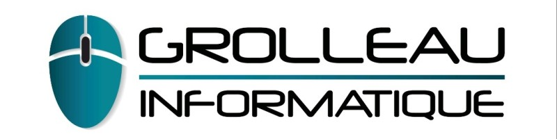

CTF
CTF Linux — OverTheWire Bandit
30 niveaux validés
Exploitation de failles basiques, gestion des droits et permissions, contournement de scripts Bash et escalade de privilèges sous Linux.
$ whoami
Étudiant en Bachelor Cybersécurité & Administration Système (ISEN Ouest — Nantes)
Pratiquant régulier de CTF et d'administration Linux. À la recherche d'un stage d'un mois à l'international (été 2027) et d'une alternance dès septembre 2027 (rythme 2 semaines école / 3 semaines entreprise).
CTF
30 niveaux validés
Exploitation de failles basiques, gestion des droits et permissions, contournement de scripts Bash et escalade de privilèges sous Linux.
Labs
Pratique des méthodologies Junior Security Analyst (analyse d'alertes et de logs), Offensive et Defensive Security.
OSINT
Collecte et recoupement d'informations publiques (Google Dorks, Shodan, Whois) et résolution de scénarios d'analyse de menaces.
Web
Conception et développement de zéro en HTML5, CSS3 et JavaScript natif.
Projets techniques en équipe : modélisation 3D (Blender, Fusion 360) et prototypage IoT (Arduino).

Diagnostic de pannes matérielles, support client, contrôle d'intégrité et tests de performance (Bitdefender, Malwarebytes, PassMark, Cinebench).
Gestion rigoureuse des stocks à cadence élevée sous WMS.
Organisation logistique sur le terrain et suivi sous Excel.
localisation Nantes / Vendée (Permis B)